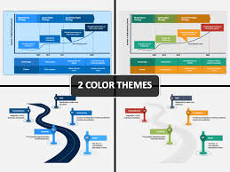

Finance in Banking: An Overview
Banking is a **cornerstone** of the financial system, acting as an **intermediary** between savers and borrowers while facilitating economic growth.
Banks provide essential services such as deposit accounts, loans, payment processing, and investment products. They play a critical role in **monetary policy** implementation, **credit creation**, and financial stability.
Banking remains vital to global finance, continuously evolving with technology and economic shifts. Whether through traditional branch services or **fintech** innovations, banks will keep shaping how money is stored, moved, and invested worldwide.
**The role of banks** in efficient allocation of scarce resources and technological advancement is key.

A finance and banking **roadmap** outlines a strategic plan for achieving specific goals, whether for a financial institution, a department within one, or an individual's career path, by identifying **key steps and milestones**.